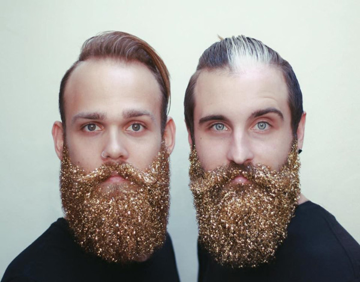
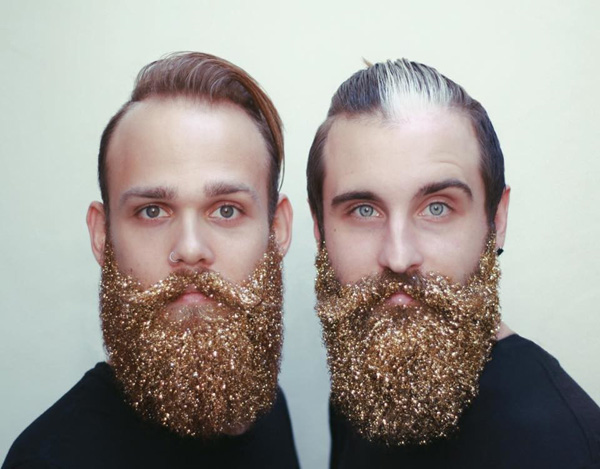

Someone, somewhere, decided that “glitter beards” needed to be a trend - and the internet is freaking bizarre, so who knows, maybe it’ll catch on and be the next big fashion for the holiday season. But those dudes are going to be finding glitter in the weirdest places for MONTHS. The Gay Beards have a tutorial on how to pull this off. Step one: rub beard oil into your beard. Step two: Pour glitter into your beard. Pretty simple. Also, is it just me or is there something slightly indecent about watching a dude pour glitter onto another dude’s face? (Not kink-shaming of course.) We did a search through Instagram, and there seem to be only a few individuals actually doing this, and everyone else is just reposting the same videos. Maybe you need a beard of just the right luxurious thickness for it to work.